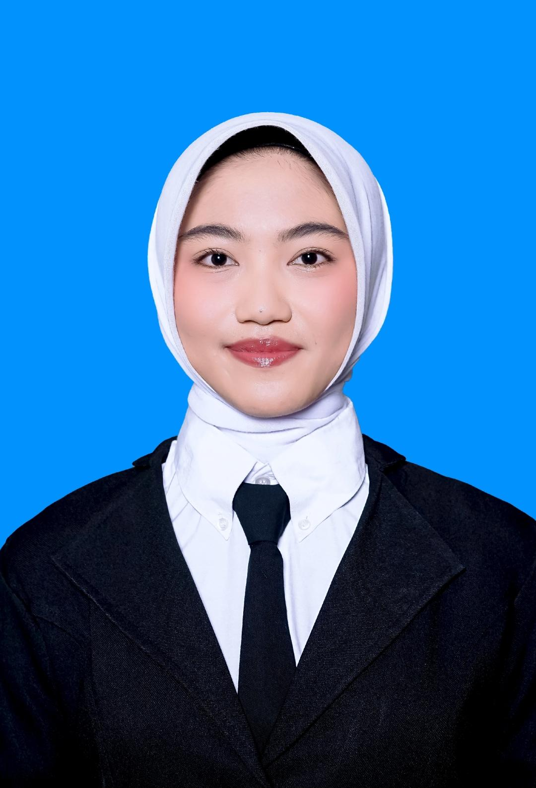

Lulusan SMA Negeri 1 Banjar 2026 dengan semangat tinggi untuk berkontribusi di bidang lingkungan, kepenulisan, dan pengembangan masyarakat.

Saya adalah lulusan SMA Negeri 1 Banjar tahun 2026 yang telah diterima di perguruan tinggi melalui jalur SNBP. Memiliki minat besar dalam bidang lingkungan, pecinta alam, dan kepenulisan. Selama sekolah, saya aktif dalam berbagai organisasi dan kegiatan kepanitiaan yang mengasah kemampuan leadership, teamwork, dan public speaking. Saya berkomitmen untuk terus belajar dan berkontribusi positif bagi masyarakat dan lingkungan sekitar.
Tahun 2025
Lomba Menulis Cerpen dan Puisi – Penulis Pustaka (2025)
Berkontribusi aktif dalam organisasi himpunan Pecinta Alam
Mengembangkan kemampuan berbicara di depan umum
Berkontribusi dalam edukasi dan pengembangan masyarakat di daerah asal